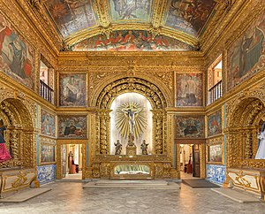
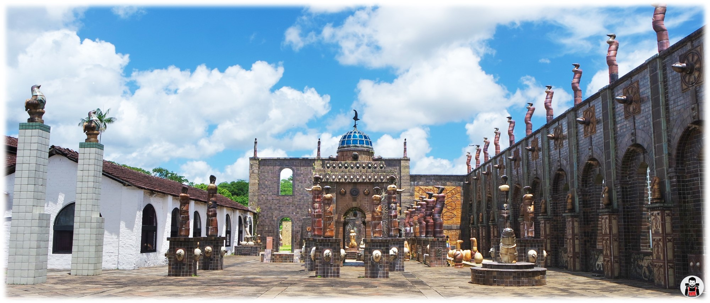
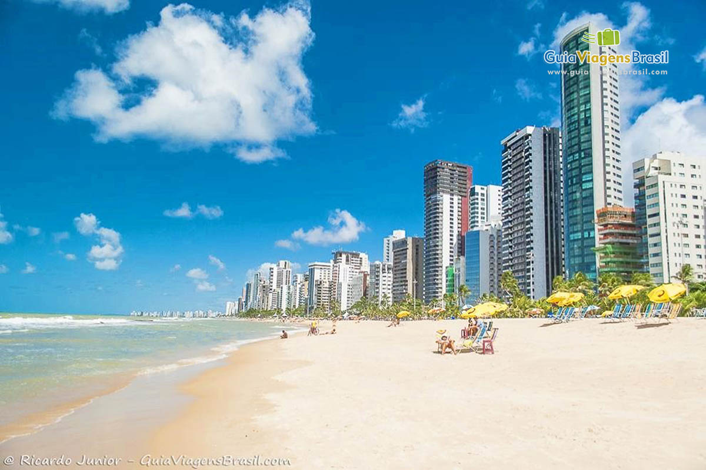

Capela Dourada
Uma das igrejas mais bonitas da capital, a Capela Dourada guarda muito da ostentação e da riqueza do Brasil colonial, com muitos detalhes em ouro, madeiras trabalhadas e pinturas sacras. Na verdade, a capela fica dentro do Convento e da Igreja de Santo Antônio, onde também está o Museu de Arte Sacra.
Perto dali, não deixe de conhecer o Convento de São Francisco, que compõe um belo conjunto arquitetônico com a Igreja de Nossa Senhora das Neves, a Capela de Santana e a Capela de São Roque.
Oficina de Cerâmica Francisco Brennand
Um passeio altamente recomendado é uma visita até a Oficina de Cerâmica Francisco Brennand, que pertence ao próprio artista. O local foi transformado por ele em um museu a céu aberto, tem espaços para a exposição de suas obras e é a oficina de produção de uma das melhores cerâmicas do país
Ainda com a chancela da família Brennand, o Instituto Ricardo Brennand é outra excelente alternativa para visitantes de todas as idades que apreciam arte, arquitetura e história. O acervo inclui exposições permanentes e temporárias de artistas nacionais e internacionais e um arsenal de armas, armaduras, tapetes e quadros da era medieval.
Forte das Cinco Pontas
O Forte das Cinco Pontas representa a última construção dos holandeses na cidade, com o objetivo de protegê-la de possíveis ataques e também para auxiliar na rede de distribuição de água. É um misto de cultura e história em um único roteiro.
No lugar, ainda funciona o Museu da Cidade, com exposições temporárias que abordam a história da capital pernambucana. Além disso, é muito comum anunciarem programações temporárias com eventos e exposições aleatórias. Logo, uma dica antes de visitar: busque informações atualizadas no site oficial do museu.

Praia de Boa Viagem
A Praia de Boa Viagem é a mais famosa da cidade, sempre muito movimentada e frequentada por locais e turistas. O lugar oferece uma boa infraestrutura e conta com uma extensa faixa de areia, bem convidativa para a prática de esportes.
Por ter arrecifes, o mar aqui costuma ser calmo e com poucas ondas. Uma continuação da Praia de Boa Viagem, a Praia do Pina também é bastante frequentada por locais. Com águas mornas, verdes e muitos coqueiros ao redor, Pina é interessante para fugir do burburinho de Boa Viagem.
